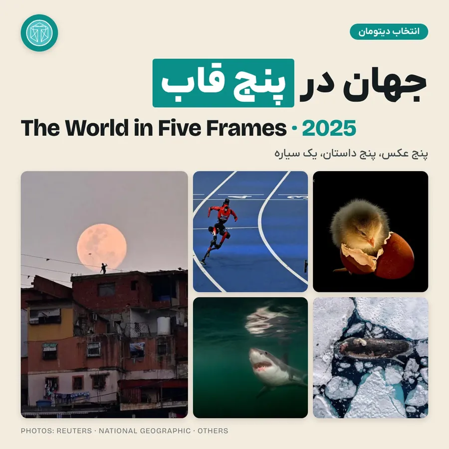
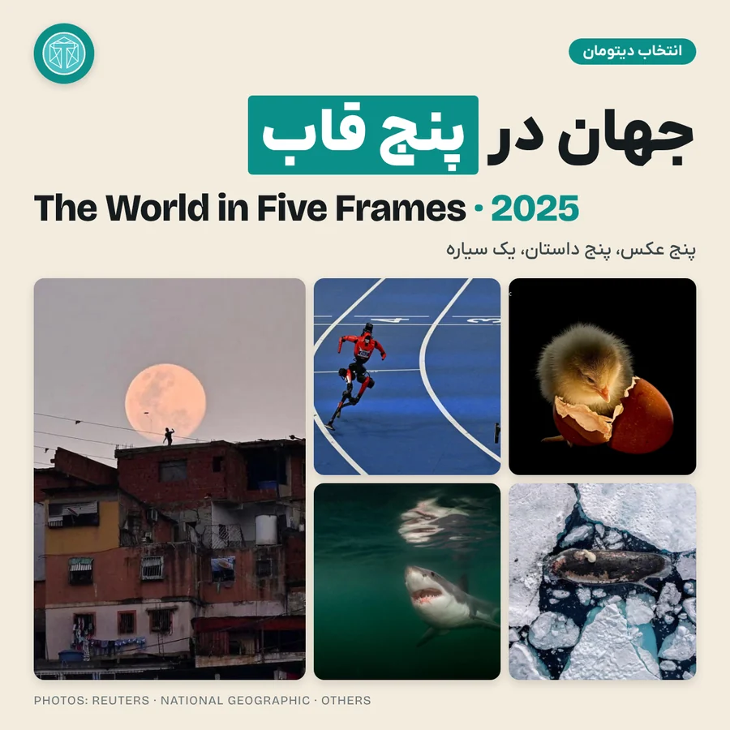
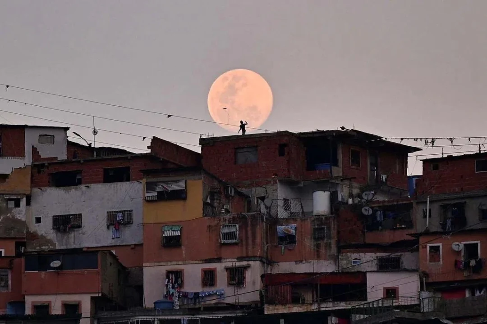
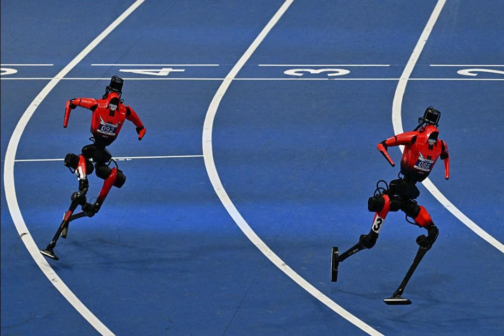
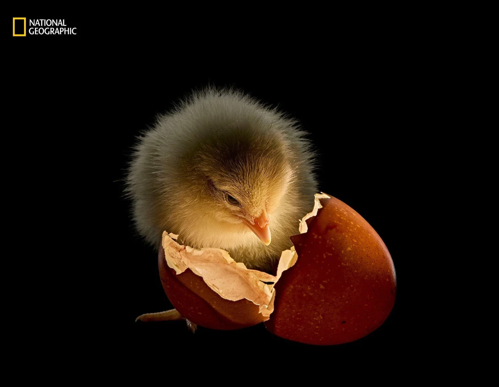
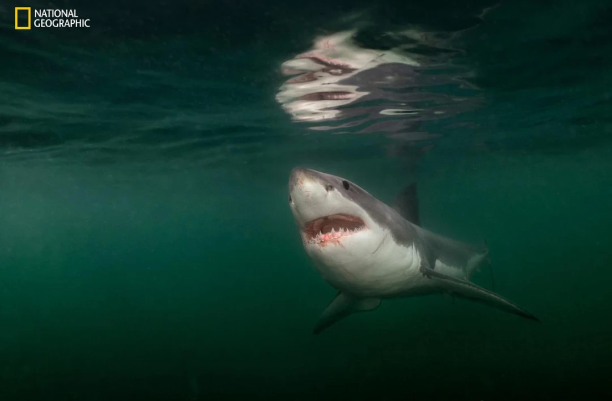
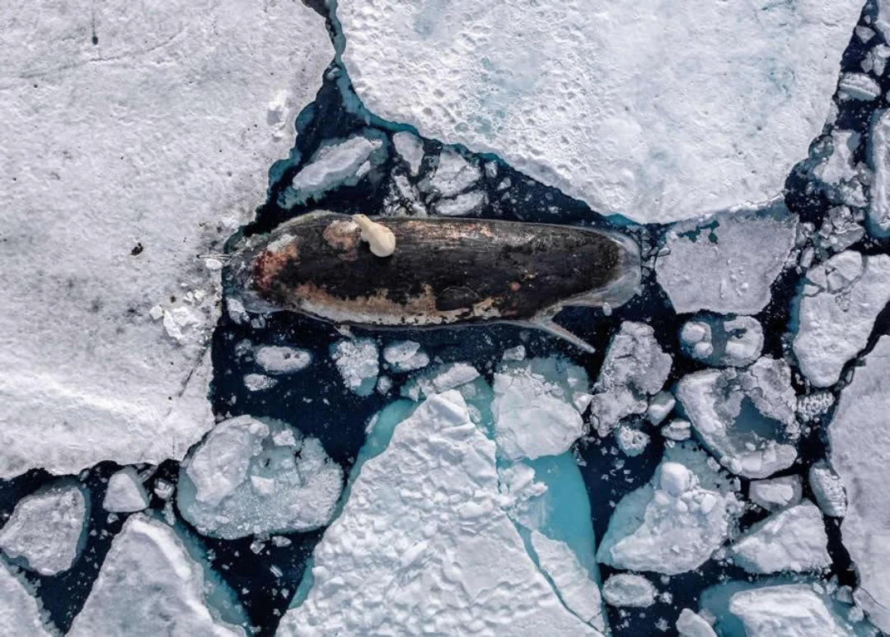

جهان در پنج قاب؛ پنج تصویر بهیادماندنی ۲۰۲۵
The World in Five Frames: five unforgettable pictures of 2025
پنج عکس، پنج داستان، یک سیاره
Five images, five stories, one planet
گاهی یک عکس بیشتر از صدها صفحه گزارش دربارهی جهان حرف میزند. از کودکی که در کاراکاس جلوی ماه بادبادک هوا میکند تا رباتهایی که در پکن میدوند؛ از شکل گرفتن یک زندگی تا شگفتیهای اقیانوس و قطب. دیتومان پنج قاب از عکسهای منتخب سال ۲۰۲۵ را انتخاب کرده؛ پنج تصویر، پنج داستان، یک سیاره.
1. کودکی در برابر ماه

📍 محلهی پتاره، کاراکاس، ونزوئلا
📅 مارس ۲۰۲۵
📷 گابی اورا، رویترز
گابی اورا سالها تلاش کرده بود طلوع ماه را بر فراز محلهی پتاره ثبت کند. هر بار یا ابر جلوی ماه را میگرفت یا ماه آنقدر بالا میآمد که قاب درست نمیشد. خودش میگوید حساب ماههای کاملی را که دنبالشان رفت گم کرده است.
سرانجام در مارس ۲۰۲۵ آسمان صاف شد، نور نرم بود و کودکی با بادبادکش روی پشتبامی درست جلوی ماه ظاهر شد. اورا این لحظه را «هدیهای کوچک» و یادآوریای برای دست نکشیدن خواند.
درس این قاب: صبر و پشتکار، و توجه به لحظههای سادهی زندگی.
دیدن عکس اصلی در رویترز · داستان پشت عکس
2. وقتی رباتها وارد پیست دو شدند

📍 سالن ملی اسکیت سرعت، پکن، چین
📅 اوت ۲۰۲۵
🤖 نخستین بازیهای جهانی رباتهای انساننما
در اوت ۲۰۲۵، پکن میزبان نخستین بازیهای جهانی رباتهای انساننما بود: ۲۸۰ تیم از ۱۶ کشور در ۲۶ رشته، از دوومیدانی و فوتبال تا کیکبوکسینگ و کارهای عملی مثل مرتب کردن دارو. رباتهای H1 شرکت Unitree در دوی ۴۰۰ و ۱۵۰۰ متر طلا گرفتند (Korea Times).
تینگشو وانگ، عکاس رویترز، عکس منتخبش را از همین رویداد گرفت: یک ربات Unitree که کنار مهندسش در دوی ۴۰۰ متر میدود. او اول سعی کرد رباتها را مثل ورزشکار انسانی نشان دهد، ولی زود فهمید داستان اصلی رابطهی رباتها با مهندسانشان است.
این مسابقهها فقط سرگرمی نبودند؛ آزمونی برای تعادل، کنترل حرکت و هماهنگی بودند. فناوریای که امروز روی پیست آزموده میشود، فردا ممکن است در کارخانه، بیمارستان و محیط کار به کمک انسان بیاید.
دیدن عکس رویترز از تینگشو وانگ
3. زندگی چگونه شکل میگیرد؟

📍 برکلی، کالیفرنیا، آمریکا
📅 عکسهای سال ۲۰۲۵ نشنال جئوگرافیک
📷 پروژهی آناند وارما، نشنال جئوگرافیک
آناند وارما، عکاس علمی نشنال جئوگرافیک، سالها روی یک پرسش کار کرد: چطور میشود تبدیل تخممرغ به جوجه را به تصویر کشید؟
عکس معروف این پروژه که در فهرست عکسهای سال آمده، جنین یک جوجهی ۱۲ روزه را داخل پوستهای مصنوعی نشان میدهد؛ مرحلهای که شکل پرنده پیداست و زرده هنوز دیده میشود. وارما چند جنین را هم تا جوجه شدن بزرگ کرد؛ پایان همان مسیری که در این قاب میبینید.
ترکیبی از علم، عکاسی و کنجکاوی انسان برای شناختن آغاز زندگی (Popular Science).
داستان پشت عکس در نشنال جئوگرافیک · دربارهی آناند وارما
4. دیدار با یکی از بزرگترین شکارچیان اقیانوس

📍 حدود ۲۴ کیلومتری ساحل هارپسول، ایالت مین، آمریکا
📅 ۸ ژوئیه ۲۰۲۵ (انتشار: ۱۴ ژوئیه)
📷 برایان اسکری، نشنال جئوگرافیک
برایان اسکری بیش از ۱۰ هزار ساعت زیر آب گذرانده است. با این همه، در ژوئیه ۲۰۲۵ تصویری کمسابقه گرفت: یک کوسهی سفید بزرگ جوان، نزدیک به ۳ متر، در آبهای مین. به گفتهی پژوهشگران، احتمالاً نخستین عکس زیرآبی تأییدشده از کوسهی سفید در این ایالت است.
چرا کوسهها بیشتر دیده میشوند؟ حمایت قانونی از فکها از ۱۹۷۲ و محدود شدن صید کوسه از ۱۹۹۷. پژوهشگران بین ۲۰۱۲ و ۲۰۲۳ بیش از ۱۰۰ کوسهی سفید را در آبهای مین شناسایی کردهاند.
این قاب، جدا از زیبایی، نشان میدهد حفاظت از یک حلقهی زنجیرهی غذایی چطور کل اکوسیستم را جان میدهد.
دیدن عکس و گزارش اصلی نشنال جئوگرافیک
5. ضیافتی کمسابقه در قطب شمال

📍 حدود ۸۲ درجهی شمالی، نزدیک مجمعالجزایر سوالبارد، نروژ
📅 اوایل ژوئیه ۲۰۲۵
📷 روی گالیتز، نشنال جئوگرافیک
روی گالیتز در سفری اکتشافی به سمت قطب شمال، لکهای تیره را در افق دید: لاشهی یک نهنگ عنبر میان یخهای دریا. کشتی یخشکن حدود ۲۴ ساعت در میان یخها راه پیمود تا به آن برسد. یک خرس قطبی نر کنار لاشه بود و بعد یک خرس ماده هم آمد. گالیتز با پهپاد، ابعاد این صحنه را از آسمان ثبت کرد.
نهنگهای عنبر معمولاً از یخ دوری میکنند و در آبهای معتدلاند؛ برای همین دیدن لاشهی آن در چنین عرضی برای پژوهشگران هم شگفتانگیز بود. کارشناسان فکر میکنند جریانها و باد لاشه را به شمال آوردهاند.
این قاب نمونهای از چرخهی بازیافت غذا در طبیعت و سازگاری جانوران با محیط است.
دیدن عکس و گزارش اصلی نشنال جئوگرافیک
پنج قاب، پنج داستان، یک سیاره
از پشتبامهای کاراکاس تا آزمایشگاههای کالیفرنیا، از پیست رباتها در پکن تا اعماق اقیانوس و یخهای قطب، جهان هنوز پر از لحظههای شگفتانگیز و ناشناختههایی است که ارزش شناختن دارند.
حق نشر همهی عکسها با عکاسان و ناشران آنهاست: رویترز، نشنال جئوگرافیک و دیگر منابع. برای دیدن نسخهی کامل و باکیفیت، از لینک زیر هر قاب استفاده کنید.
بیشتر بخوانید
- اروپا با ۵۰ میلیارد یورو به رقابت فناوری آینده میآید
- همه دربارهی هوش مصنوعی سؤال را اشتباه میپرسند
منابع
- Reuters via ThePrint: Some of the best Reuters photos of 2025 and the stories behind them (16 Dec 2025)
- Reuters Connect: Gaby Oraa, moonrise over Petare
- Reuters Connect: Tingshu Wang, World Humanoid Robot Games
- Korea Times: Unitree, X-Humanoid top medal total at the world's first humanoid robot games
- National Geographic: Pictures of the Year 2025, behind the scenes
- Popular Science: 5 captivating images from National Geographic's Pictures of the Year
- National Geographic: Anand Varma's photography
- National Geographic: Rare image of great white shark captured off the coast of Maine (14 Jul 2025)
- National Geographic: Rare images of polar bear scavenging on a sperm whale in the Arctic (18 Sep 2025)
آخرین بازبینی: ۵ آذر ۱۴۰۵. داستان عکسها از گزارش رویترز (ThePrint)، نشنال جئوگرافیک و Popular Science بررسی شد. عکاس عکس رباتها مشخص نیست و عکس منتخب رویترز از تینگشو وانگ نیست. حق نشر همهی عکسها با عکاسان و ناشران آنهاست.